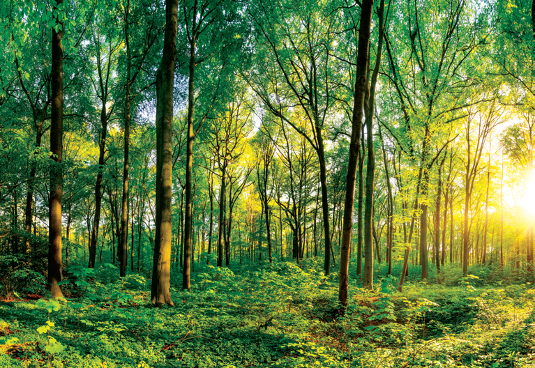

The learner will be able to,
Describe the Structure, functions and types of ecosystems
Draw ecological pyramids by means of number, biomass and energy
Interpret carbon and phosphorus cycle
Recognise pond ecosystem as a selfsufficient and self-regulating system
Analyse ecosystem services and its management
Discuss about the importance and conservation of ecosystem
Explain the types of plant succession